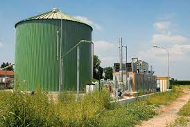
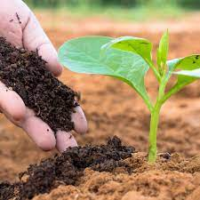

Biogas
Manure can be used in anaerobic digesters to produce biogas, a renewable energy source composed mainly of methane and carbon dioxide. Biogas can be used for heating, electricity generation, and as a vehicle fuel.

Fertilizer
Manure is a rich source of nutrients such as nitrogen, phosphorus, and potassium, making it an excellent natural fertilizer for crops. It helps improve soil fertility, structure, and water retention.

Methane
Methane is a potent greenhouse gas emitted from manure. However, capturing methane from manure through anaerobic digestion not only reduces greenhouse gas emissions but also produces renewable energy.